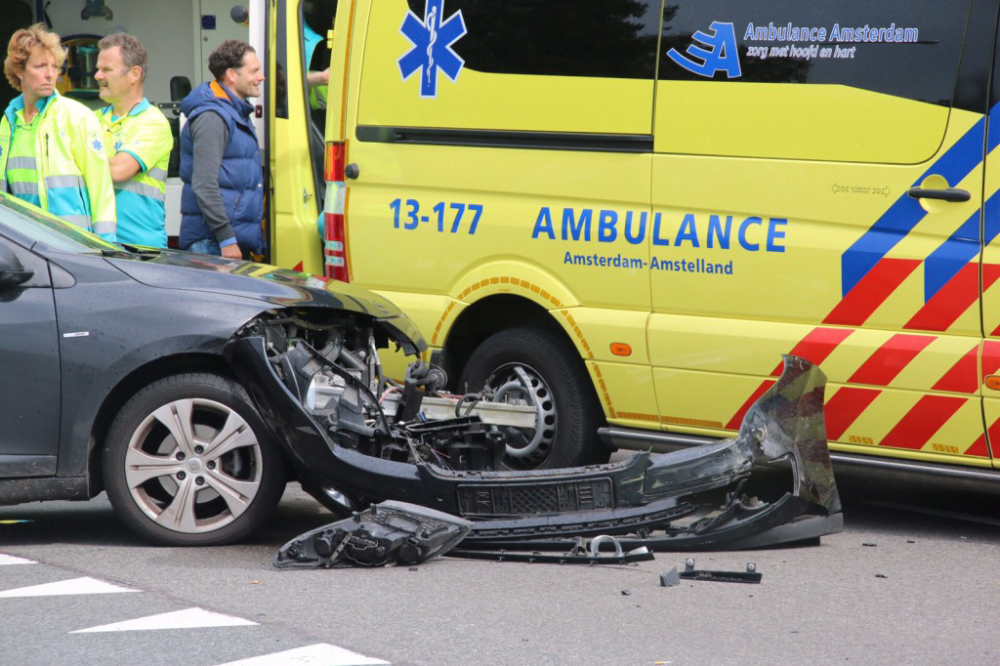
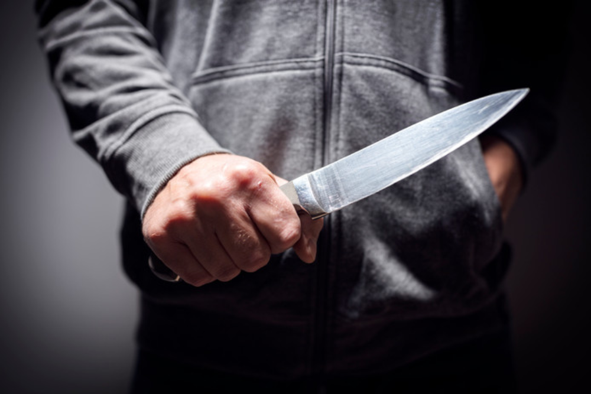

Nieuws uit Nederland

een aanrijding op de Tussenring zijn maandagochtend twee personen gewond geraakt. Door de ernst van
het ongeval hebben de hulpdiensten veel middelen ingezet. De weg is lange tijd afgesloten geweest.
De aanrijding vond plaats op de rijbaan richting de Hogering, vlak voor het spoorviaduct. De exacte
aanleiding is nog niet bekend, maar mogelijk is een voertuig uit de andere richting door de middenberm
gereden en frontaal op een tegenligger gebotst.
Er is door de hulpdiensten opgeschaald naar middel-hulpverlening.
Er werden meerdere brandweervoertuigen en ambulances ingezet en het Mobiel Medisch Team uit Amsterdam
kwam met de traumahelikopter ter plaatse om te assisteren bij de verzorging van de slachtoffers. De weg
werd door de politie afgezet tussen de Mondriaanweg en de Vrijheidsdreef.
Een van de inzittenden moest door de brandweer uit het voertuig worden bevrijd, waarbij het dak moest
worden weggeknipt. Beide slachtoffers zijn naar een ziekenhuis gebracht.
De Verkeers Ongevallen Analyse van de politie heeft onderzoek gedaan, waarvoor de weg nog langere tijd
afgesloten is gebleven.

Een nog onbekend persoon is in de nacht van vrijdag op zaterdag zwaargewond geraakt bij een
steekpartij aan de E. F. van den Banweg in Almere.
Omstanders zagen rond 02.15 uur iemand met verwondingen op straat liggen en schakelden de politie in.
Het slachtoffer had diverse steekwonden en is met een traumahelikopter afgevoerd naar het ziekenhuis.
Een politiewoordvoerder kon niets zeggen over de aanleiding van de steekpartij of de identiteit van het
slachtoffer.
Stage lopen in Nederland
Een stage zoeken in Nederland is vaak makkelijker dan een stage in het buitenland. Je komt hier nou
eenmaal makkelijker aan een stage. Bovendien kan je bij je ouders of in je studentenkamer blijven wonen.
Je hoeft je vrienden en familie tijdens je stageperiode dus niet te missen. Bij bedrijven in Nederland
wordt in bijna alle gevallen Nederland gepraat.
Dit zorgt ervoor dat je makkelijk met je collega’s en stagebegeleider kan communiceren. Bovendien heb je
meer een connecties in Nederland wanneer je na je studie op zoek gaat naar een echte baan.
Wanneer je stage gaat lopen in Nederland kun je dit combineren met andere studieactiviteiten. Zo kun je
ervoor kiezen om twee of drie dagen per week stage te lopen en de andere dagen te studeren.
Maar het is ook mogelijk om een 40 uur per week stage te lopen. Het is maar net wat jij, en het bedrijf,
wil.